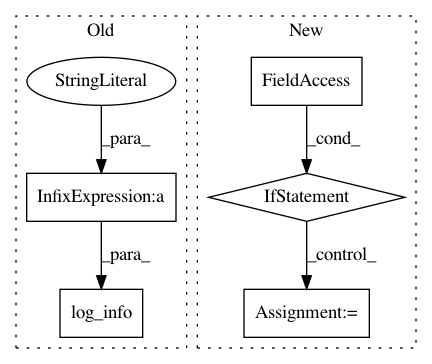

386917355bbe616ec57881ba8a950a49cfbef9b0,tgen/parallel_percrank_train.py,ParallelRanker,train,#ParallelRanker#Any#Any#Any#,116
Before Change
log_debug("Ready %d" % req_portion)
log_info("Retrieved finished request %d / %d" % (iter_no, req_portion))
if req.error:
log_info("Error found on request: IT %d PORTION %d, WORKER %s:%d" %
(iter_no, req_portion, sc.host, sc.port))
results[req_portion] = pickle.loads(req.value)
self.pending_requests.remove((sc, req_portion, req))
self.free_services.append(sc)
log_debug("Done with %d" % req_portion)
After Change
time.sleep(self.poll_interval)
// delete the temporary ranker dump when the 1st iteration is complete
if self.ranker_dump_path:
os.remove(self.ranker_dump_path)
self.ranker_dump_path = None
// gather/average the diagnostic statistics
self.loc_ranker.set_diagnostics_average([d for _, d in results])
// take an average of weights; set it as new w
self.loc_ranker.set_weights_average([w for w, _ in results])
In pattern: SUPERPATTERN
Frequency: 3
Non-data size: 5
Instances
Project Name: UFAL-DSG/tgen
Commit Name: 386917355bbe616ec57881ba8a950a49cfbef9b0
Time: 2015-12-18
Author: odusek@ufal.mff.cuni.cz
File Name: tgen/parallel_percrank_train.py
Class Name: ParallelRanker
Method Name: train
Project Name: UFAL-DSG/tgen
Commit Name: a3d6b8862c04894b903a269ed6f7f16a9899e320
Time: 2016-03-07
Author: odusek@ufal.mff.cuni.cz
File Name: tgen/parallel_seq2seq_train.py
Class Name: ParallelSeq2SeqTraining
Method Name: train
Project Name: UFAL-DSG/tgen
Commit Name: 4bd3c056d7a3a1ebaf3c040944708912d001abd3
Time: 2016-04-14
Author: odusek@ufal.mff.cuni.cz
File Name: tgen/seq2seq.py
Class Name: Seq2SeqGen
Method Name: train